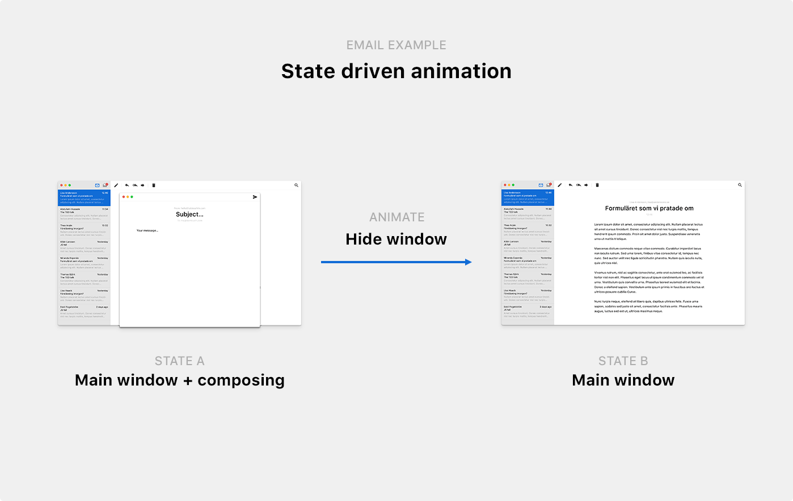
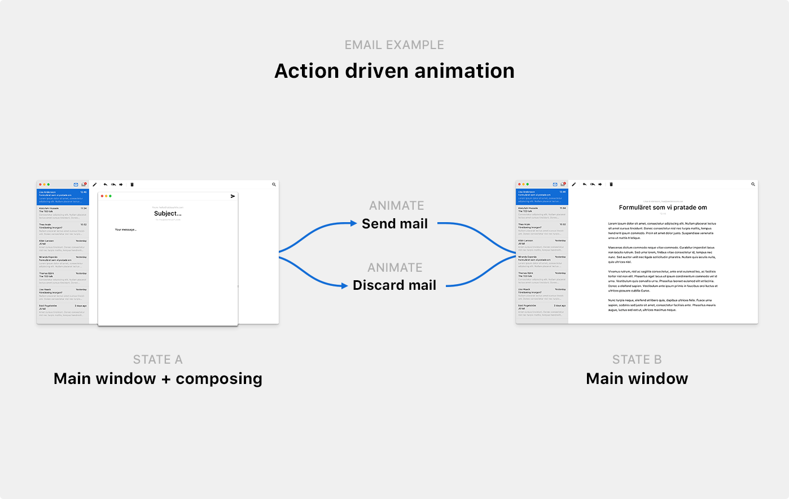
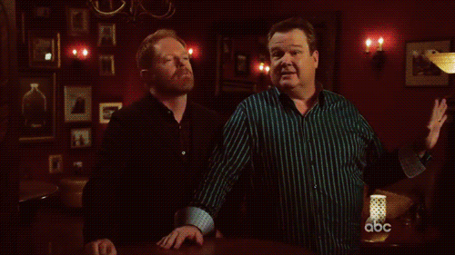
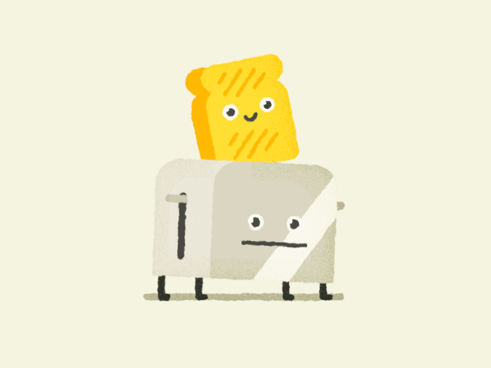

Meaningful Motion with Action-Driven Animation
How do we animate interfaces in ways that are not just beautiful, but meaningful? When we add motion to interfaces we want to in one way or another improve the user experience, be it through aiding the comprehension of a concept, setting the mood, improving the perception of speed, or directing the attention of a user. Regardless of the intent of the animation, when animations fail to be meaningful they often fail because of the same reason; failed animations simply visualize objects morphing between being hidden and visible, rather than visualizing the actions unfolding on screen. A window rarely just closes or opens; a message is sent, a draft is discarded, an item is used.
This is essentially state-driven animation vs. action-driven animation. By applying action-driven animation you can catch yourself in the act of creating something that’s not as meaningful as it could be. Are you simply morphing between states, or are you visualizing actions? Meaningful motion is about clear and engaging storytelling, and we can apply action-driven animation to remind ourselves when we’re straying from that path.
State-driven animation
Let’s take a look at a basic example of state-driven animation vs. action-driven animation: interacting with a modal. This is a simulation of state-driven animation being applied to a modal:
As the modal appears, it fades in. Whatever button is pushed, it fades out again. What’s wrong with this animation? Fading between hidden and visible isn’t helpful to understand what’s happening on screen, other than in underlining that an object is being shown and hidden.
You might be thinking “C’mon, what is there to understand? It’s a modal. It’s being hidden, and shown!”. Yes, but—the user is also triggering an action. Rather than only morphing between states, we can use motion to reinforce what action is being triggered by the user.
Action-driven animation
Here’s is a simulation of action-driven animation being applied to the same modal:
Now, how is this better than the previous animation? Try to ignore for the moment the aesthetics of the two. What we want to focus on is this: what does the second animation convey that the first one does not?
In the first example, with state-driven animation, we use two different animations: fading in, and fading out. Clicking Cancel and clicking Do it both triggers the fade out animation. In other words, the only thing we’re differentiating between is the states of the modal: hidden vs. visible.
Contrarily, in the second example we’ve got three different animations, and we differ between the two actions by playing different animations depending on the chosen option. On Cancel, we clearly show that the modal is being cancelled by scaling it down and fading it out, sending it back to where it came from. When the affirmative action is selected (Do thing), we do the opposite: scale it up and fade it out, bringing it closer to the user. In other words, we’re not only differentiating between states, but how you travel between those states, i.e., what actions are being performed.
It’s common to think of apps as a series of views or states, and animations as a way to travel between those states. Take this Email app and two of its states:

If we do so, it’s easy to in our animations neglect how these states are connected, and always use the same transition to animate between those states. Rule of thumb: if your methods are called something like showWindow() and hideWindow(), or if you’re only animating opacity, you’re leaving your users in the dark to figure out exactly what happened. They’ll see that something changed, but not what caused that change. It’s sort of like leaving a party without saying goodbye; the host won’t know if you hated the party or just had to run home to do your laundry.
Action-driven animation elevates the connections between the views to become the plots of the motion. In other words, what took you between state and A and state B? In our Email app, you can get between state A (composing visible) and state B (composing hidden) in at least two different ways: either by sending an email, or by discarding an email and closing the window.

You’ll make your app easier to understand by visualizing whatever caused the change of state. By creating a unique animation for every action we can help users differentiate between different action paths, and help them intuitively gain a deeper understanding of the events unfolding on screen.
When state-driven animation fails
That sounds simple, right? It’s easier said than done. A while back, just before giving a talk on UI animation at a conference in Prague, I was stumped by an animation used by Tumblr. Before continuing, I want to underline that I highly respect the Tumblr design team—they’ve produced some admirable design, and I have on several occasions used some of their implementations as examples to be inspired by. That said, something went wrong in this specific instance.
I had just signed up for a new Tumblr account and was getting ready to make my first post. But for some reason, whatever I posted kept disappearing as I hit Post:
Or, as you can see towards the end of the clip, that’s not at all what happened. Whatever option I selected, Close and Post both triggered the same animation (with the exception of a spinner showing up briefly inside the Post button when I selected Post). Nothing gave me a hint of that something had been successfully posted. The post section just disappeared.
What’s gone wrong here? On first sight this animation looks meaningful and helpful. But again, we’re just morphing between two states, rather than visualizing the actions unfolding on the screen. Cancelling a post and successfully posting is two fundamentally different actions, yet they share the same animation. In this instance state-driven animation doesn’t just fail to be as meaningful as it could be—it’s causing confusion and obfuscating what’s happening.
To be fair to Tumblr, the issue is in this instance is being amplified by the Dashboard on-boarding that’s floating just below the navigation, pushing down new posts below the fold. But regardless of the unlucky circumstances, the animation can be improved by moving from state-driven animation to action-driven animation. Rather than only morphing between the two states of the posting section (visible and hidden), the action of posting could be associated with an animation that clearly transitions between you writing a post, to the post being published.
Applying action-driven animation
So how do you go about using action-driven animation to improve the animations of your product? To show this in practice, I’ve mocked up a dummy email app (shown previously in the email illustration above). Let’s look closer at the actions related to working with a message, and make the move from state-driven animation to action-driven animation together.
The first step is to list all important actions in the part of the app that you’re working with, rather than all views. There are only two views involved in working with a message in our Email app, but there are four different actions. You can:
- Create a new message
- Send the message
- Discard the message
- Close the message and save it as a draft
If we just faded between the different views, this is what it would look like working with the app (going through the different actions in the order above):
To create more meaningful animations we need to look critically at every fade and ask ourselves: what actions are being taken?
Choosing a storytelling axis
Before we create a unique animation for every action, let’s settle on a primary axis to weave our storytelling around. If you’re interacting with something that will affect yourself or the user directly (e.g. a modal asking you if you want to continue), the Z axis is usually the best choice. If we weave our storytelling around the Z axis, like we did in our modal example earlier, we can make the modal move closer towards you as you choose an affirmative action (scaling up the modal, almost as if it lifts off the screen and travels towards you), and we can make it move away from you as you dismiss it. The Z axis reinforces that the modal relates to you.
When you’re interacting with something that relates to someone else, like an email message that you’re about to send off to someone, your best choice of primary axis is usually the Y axis. By moving something rapidly upwards along the Y axis and making it exit the screen while still accelerating away from you, we reinforce the concept of you sending off something to someone else. It’s almost as if you’re taking an envelope and sending it off to its next destination. Or as if you’re using a salmon cannon:

Since we’re working with an email message here that we’ll eventually send off to someone else, let’s pick the Y axis as our primary axis. What that in mind, let’s break down every action and animation, before reviewing it all together.
Creating a new email
Rather than only fading in a new message once you create it, we can animate the window to make it appear like we’re summoning a new message from below. Just like how in this lovely GIF (by Jonas Mosesson) the toast appears with a bounce from below:

In the same vein, we can fade in the message as we animate it upwards along the Y axis, but we’ll make it stay in view:
This animation is by itself not much more meaningful than only fading in and out, but it starts to get interesting as soon as we start adding the other animations that are clearly different from this, but connected to the same storyline.
Discarding a message
Once you discard an email we can make it fall back down, returning it to where it came from. Here I’m also applying a slight tilt to the window on its way down to illustrate that you’re throwing it away (rather than storing it somewhere). As if you’re dropping a piece of paper, rather than putting it away neatly:
Sending a message
Once you hit send, let’s shoot it off, away from us (and hopefully towards a recipient):
With those three actions visualized in distinctly different ways, we’ve now got a clear story created around how messages are created, discarded, and sent off. Even though you might not infer the meaning of all the animations on first sight (they’re not necessarily intuitive), they’re clearly different and connected to an action each, and you can at the very least learn how to tell the different animations apart.
Saving as a draft
We’ve got one more action to cover. Saving a draft is crucially not the same thing as closing the window and discarding an email. Again, we’re dealing with actions, not states. It’s not a matter of showing or hiding objects, it’s a matter of visualizing the events unfolding on screen.
If we try to close the new message window while writing a message, we’re asked if we want to discard the email, or save it as a draft. Given that someone chooses “Save as draft”, what’s important to convey? At least two things, 1) that the message is being saved as a draft somewhere, and 2) exactly where that somewhere is. We want users of our app to understand where they can find that draft later, so that they can send it when the time is right:
This animation clearly shows how your message message gets stored in your outbox, and it even tells you where your outbox is located! We’ve restricted ourselves to animating along the Y-axis up to this point to enforce the concept of creating something and sending it off. Now that we’re deviating from that storyline and instead storing a message, we can drop the axis restriction and shrink the message while we move it towards the outbox icon.
To make it clear that we’re storing the message inside the outbox (and not just shrinking and hiding the message window), we’re adding another effect: as the message window arrives at the outbox icon, we make the outbox icon grow with a small bounce effect (as if it swallows the message), and we add a small counter indicating that your number of saved drafts just increased from 0 to 1. This animation doesn’t just tell you what events are being triggered: it teaches you how the app works, and how to navigate it.
Review: before & after
Before we started applying action-driven animation, we faded views in and out, which gave the false impression of us using animations to make the experience better. The animations looked a bit better than simply popping views in and out of view, but the animations didn’t add much value in terms of helping users understand of what events were unfolding on screen. This is an example of state-driven animation, and it looked like this:
After critically reviewing every animation and asking ourselves what each animation should convey and how best to do so, we iterated on the experience and created a set of animations that each conveys what events are unfolding on screen. We did so with the help of action-driven animation, which helps us identify the number of animations that we need to create through its focus on possible action paths, rather than on possible states. After applying action-driven animation, this is what our prototype looks like:
In sum
I divided UI animations into two different models: state-driven animation and action-driven animation. I argued that the first model tends to produce animations that lack any significant meaning; they are not helpful. I presented an example from Tumblr to illustrate how state.driven animation can, even when it looks beautiful, miscommunicate and cause confusion.
I argued that a better way to work with animations is to focus on the actions or events that are being triggered, which I call action-driven animation. We reviewed how this technique can be applied to a modal and an email app, and how it aids users in understanding what actions and events are unfolding before them, but also how the app works, and how to navigate it.
Is action-driven animation always better? The statistician George Box famously said “All models are wrong but some are useful”. He elaborated:
All models are wrong but some are useful […] The only question of interest is “Is the model illuminating and useful?”
In the same vein, action-driven animation is not a model that claims to absolutely explain or prove how an app should be animated. It’s a simplified way of thinking about motion that you can apply to review the interface animations of an app or product to create more meaningful animations. I’ve found it useful to use in my work, and I hope you will, too.
Technical details
Although no code has been shared in this post, all of the examples that I created are animated with the lovely anime.js library (by Julian Garnier). If you want to play around with the email prototype and its animations, feel free download all the example code and have a look around. All icons are from Google’s Material.